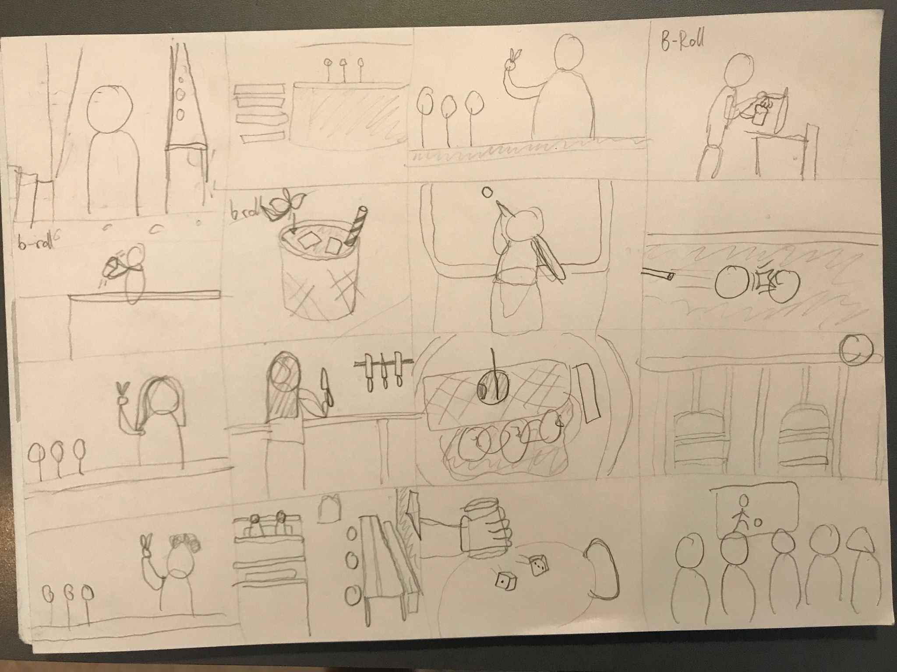

Tema3 Grundlæggende video
03.05.03 redesign
Værktøjer brugt
Link til redesign
Kan ses her: Link

Faglige Mål
Kundecase
Vi havde en kundecase som vi sluttede dette tema af med, denne gang var Sex & Samfund der blev de udvalgte. Vi havde med den forrige opgave hele tiden bygget op til denne opgave. Opgaven gik ud på at vi skulle lave et spil for unge i alderen 13-15 år.Selve spillet skulle skabe opmærksomhed omkring emnet billeddeling, og hvilke konsekvenser der medfølger ved at dele upassende og ulovlige billeder på f.eks. de sociale medier. Vores case gik ud på at vi skulle formidle privatsnak ud til folk.Selve spillet skulle skabe opmærksomhed omkring emnet billeddeling, og hvilke konsekvenser der medfølger ved at dele upassende og ulovlige billeder på f.eks. de sociale medier. Det var vores opgave at finde ud af, hvordan man kunne formidle det budskab på en interessant og alligevel informativ måde. Vi blev hurtigt enige i min gruppe at vi ville lave et enkelt spil, hvor der ikke var for meget andet end budskabet, og at brugeren hellere skulle følge med. Spillet går ud på at man skal hjælpe en pige, der står med hendes mobil i hånden, med hvad hun må dele og hvad hun ikke må dele. Der bliver stillet 6 spørgsmål, som fremgår som om at det er noget hun spørger sig selv om (i en tankeboble) og spilleren af spillet skal derefter trykke på del eller del ikke, som om at det var hende. Spilleren har tre liv. Hvis spilleren svare forkert 3 gange, taber personen spillet.
Design dokumentation
Storeboard
Stiletile